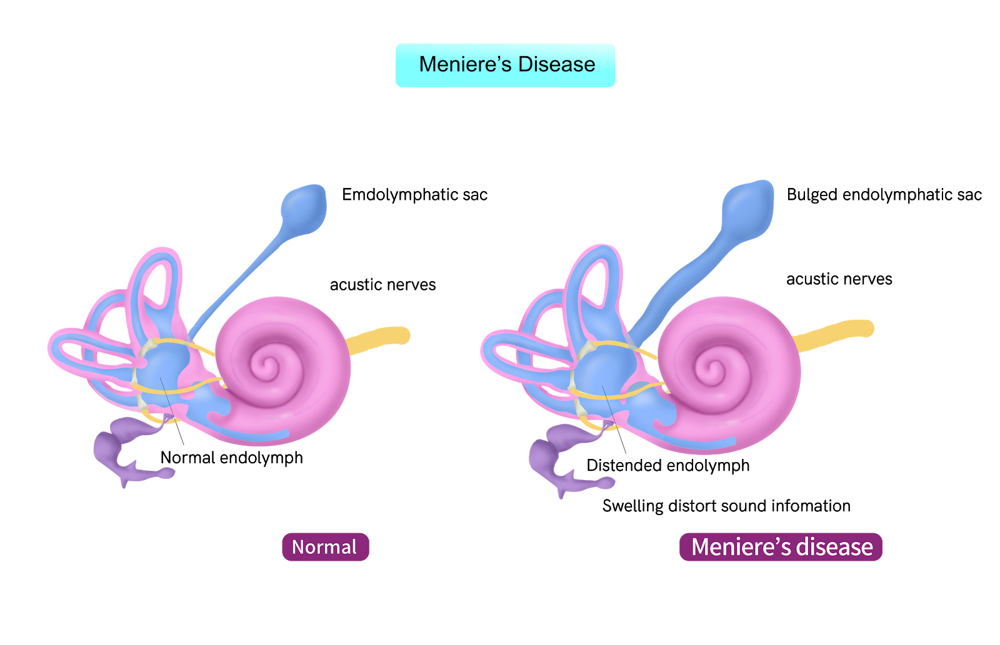

Meniere's disease

SYMPTOMS:
Meniere’s disease symptoms tend to come on as “episodes” or “attacks.” These symptoms include:
-
vertigo, with attacks lasting anywhere from a few minutes to 24 hours
-
loss of hearing in the affected ear
-
tinnitus, or the sensation of ringing, in the affected ear
-
aural fullness, or the feeling that the ear is full or plugged
-
loss of balance
-
headaches
-
nausea, vomiting, and sweating caused by severe vertigo
CAUSES
The cause of Meniere’s disease isn’t known, but scientists believe it’s caused by changes in the fluid in tubes of the inner ear. Other suggested causes include autoimmune disease, allergies, and genetics.
DIAGNOSIS
If you’re experiencing symptoms of Meniere’s disease, your doctor will order tests to examine your balance and hearing, and rule out other causes of your symptoms.
-
Hearing test
A hearing test, or audiometry, is used to determine if you’re experiencing hearing loss. In this test, you’ll put on headphones and hear noises of a variety of pitches and volumes. You’ll need to indicate when you can and cannot hear a tone, so the technician can determine if you’re experiencing hearing loss.
-
Balance tests
Balance tests are performed to test the function of your inner ear. People who have Meniere’s disease will have a reduced balance response in one of their ears. The balance test most commonly used to test for Meniere’s disease is electronystagmography (ENG).
- Other tests
Issues with the brain, such as multiple sclerosis (MS) or brain tumors, can cause symptoms similar to Meniere’s disease. Your doctor may order tests to rule out these, and other, conditions. They may also order a head MRI or a cranial CT scan to assess possible problems with your brain.
TREATMENTS
Meniere’s disease is a chronic condition with no cure. However, there are a range of treatments that can help with your symptoms, from medication to surgery for the most severe cases.
- Medication
-
Physical therapy
Vestibular rehabilitation exercises can improve symptoms of vertigo. These exercises help to train your brain to account for the difference in balance between your two ears. A physical therapist can teach you these exercises. -
Hearing aids
An audiologist can treat hearing loss, usually by fitting you with a hearing aid. -
Surgery
Most people with Meniere’s disease don’t require surgery, but it’s an option for those who have severe attacks and haven’t had success with other treatments. An endolymphatic sac procedure is done to help decrease the production of fluid and promote fluid drainage in the inner ear.